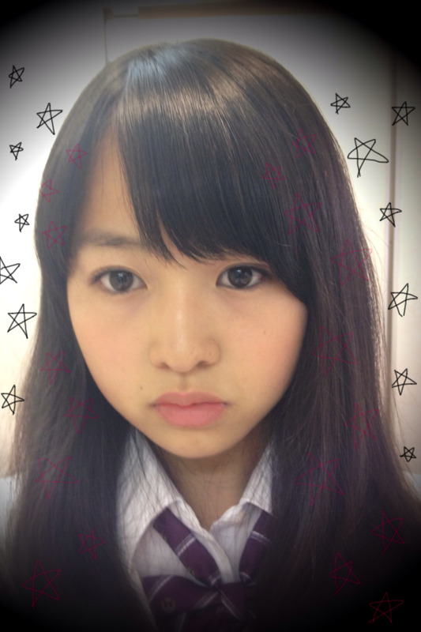

| 2011/12 15 Thu | 27回目*marika |
更新2‼
今日も楽しかった~~♪♪
いつも読んでくださってる方、
初めて読んでくださった方、
コメントしてくださった方、
ありがとうございます...!
さゆにゃん、とまたん
あらめまして、おめでとうっ♡
今日もかわいかったよ*←
今日はさゆにゃんとお話してね^^
めっちゃ高山ってたの笑
さゆにゃんもっと話そ-----♡!!
だいぶ前に撮ったしゃしんん----

「れな....」
「まりか....」
「れな!!」
「まりか!!」
「れな♡」
「まりか♡」
笑
逆バージョン有り。
れなとも仲良しなの----:D
会話する時の最初が
お互い名前を呼び合ってからなの笑
ときどき
れなって呼んだら
「りん付けなさい!りん!!」
って!!!!
だからときどき
「りんちゃーん♡」
って呼んであげるの笑
実は仲良いんだ----。んふふ
今日バレエの発表会のDVDが届いたから
Lesson終わってから
家で見ちゃった!!
また踊りたいなって思った><
しゃしんも届いたのさっ=33
やっぱりバレエは楽しいし、だいすきや♡
...........................
＊質問お答えします^^
・名前の由来は？
万 沢山花開く＊
理 賢く＊
華 華やかで美しく＊
まりかという響き、
漢字も素敵で、気に入ってます。
名付けてくれたおじいちゃん、ママ
ありがとうございました。
この名前にふさわしい女の子になりたいです。
・マフラーのこと
ああ!!間違えました!!!
すみません><
真洋との2ショの時のマフラーだと
勘違いしてました; ;
下のしゃしんのチェックのストールは
これもママさんからのおさがりで
45Rpmっていうブランドのやーつです!!
本当にごめんなさい;(
・ヲタ芸って知ってますか？
知ってますよ♪
迫力があっていいです!!
うれしいです^^*
・豚と白菜のミルフィーユ鍋って何？
あれですよ!あれ.....←
豚肉と白菜をサンドして
切ってきれいに鍋に入れてあるやつです!!
おいしいですよ--＊＊
お疲れさまりか
いいですね!にやっ
使おうかな^^*笑
・25回目の私服のしゃしん
誰にパンチしてるの？
しーてーなーいー!!笑
これね、真洋が撮ってくれたの*
のび〜してたらブレた♡笑
・好きで毎週絶対見てる番組とかある？
乃木坂って、どこ？
リンカーン
ガキの使いやあらへんで！
めちゃイケ
主にお笑い♡です。
・ねねに誕プレ何あげたの？
ほんとにねねに申し訳ない; ;泣
そんなたいしたものじゃないんですよ-
でも、0時にメールしたっ^^*
でもねねはそん時寝てたぁぁぁがーん
...........................
今日あすかに
「なんだよーばぶちゃんって
呼ぶぞーちゃははっ」
って言われたよ笑***
なんですってー!?
ばぶちゃんですってー!?←
みなさん、いじるのはいいけど
ばぶちゃんって呼ばんといて!笑
みなさん!コメント!!
いつもいつもうれしいです*
毎日うれしくて
私はどうしたらいいのですか!!
えっ
照れてないよ!!!←
照れて顔隠さないよ、もう!!///
はい。
もうすぐクリスマスですね*.＊。
我が家には
すんんごいかわい-ツリーが飾ってあります＊
もうすぐクリスマスということは
もうすぐイベントということです!!☆
楽しみだな~:D!!

どこ見てるのかしら***
みなさん、今手かじかんでませんか?
手もあっためてください。
お家にいても厚着しよー!!
明日も学校、お仕事がんばろー!!
今日もお疲れさまりか*
ベビたん*****bA by marika